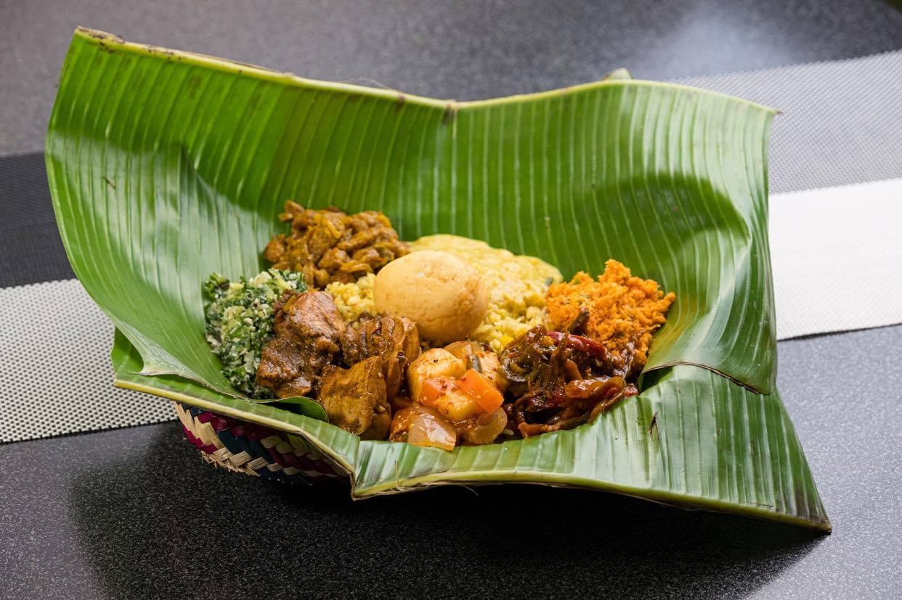
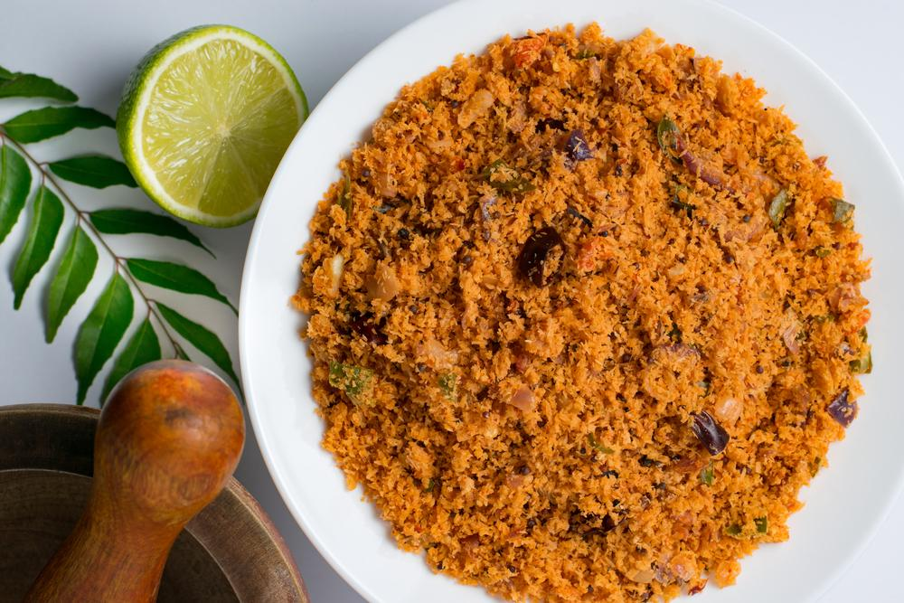
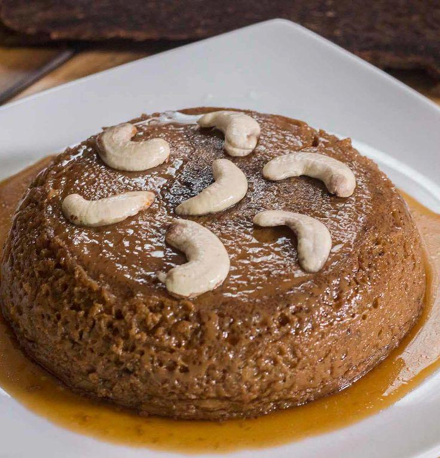
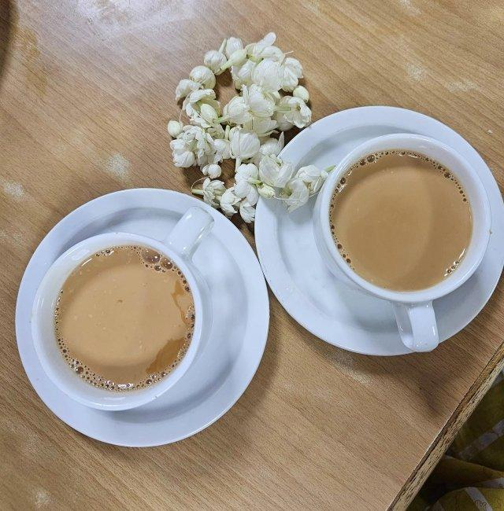

Discover the Taste of Sri Lanka
Experience authentic Sri Lankan cuisine, traditional recipes, and unforgettable flavors.
Explore Foods
Experience authentic Sri Lankan cuisine, traditional recipes, and unforgettable flavors.
Explore Foods






